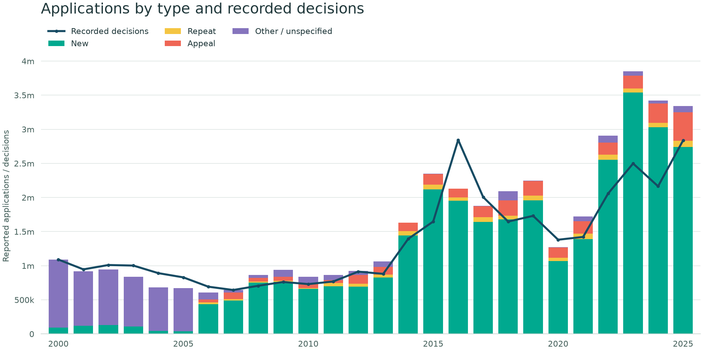
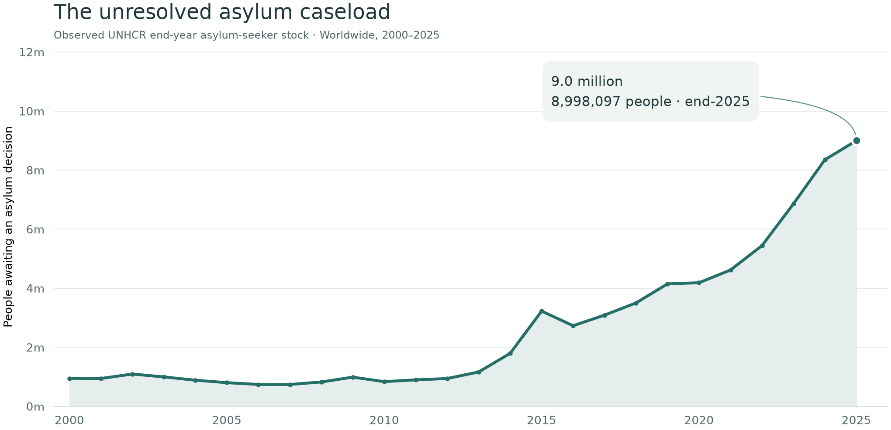
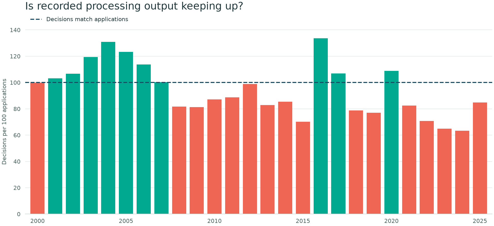
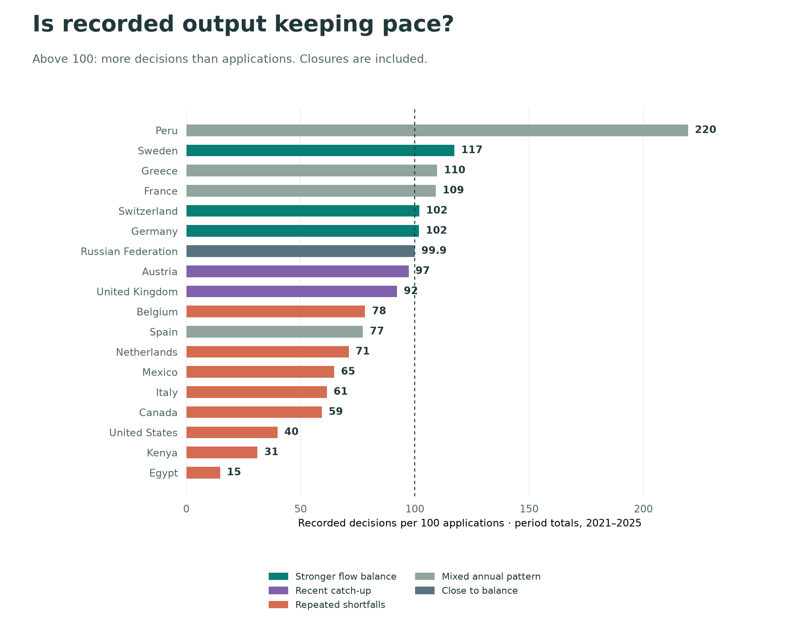

Asylum under pressure
The global picture, the processing gap, and the countries keeping pace
Worldwide asylum applications were almost half as high again in 2025 as in 2019. Over the same period, the observed number of people with unresolved claims more than doubled. Yet the pressure is uneven: some receiving countries have recently recorded enough decisions to match incoming applications, while others show repeated shortfalls.
Understanding that picture requires keeping three measures separate: applications coming in, decisions being recorded, and the unresolved caseload observed at year end.
This article presents the main findings from Asylum in perspective, my full interactive report. The website includes country profiles, maps, downloadable data and detailed methods.
Three figures describe the latest year
- 9.0 million people in the observed worldwide end-year asylum-seeker stock in 2025.
- 3.3 million reported application events during 2025.
- 85 recorded decisions for every 100 applications in 2025, including administrative closures.
These figures describe different things. The pending stock is reported in persons. Application and decision totals combine the original persons- and case-reported values without conversion, across reported procedures and application types. They measure reported activity, rather than unique people.
Applications remain high, despite falling from their peak
Reported applications increased from 2,245,518 in 2019 to 3,343,203 in 2025, a rise of 49%. That expansion was not continuous. Applications peaked at 3,848,894 in 2023; the 2025 total was 2.3% below 2024.
A high level of demand and a growing unresolved caseload can therefore coexist with a fall in annual applications.

The chart compares activity recorded in the same year. It does not follow a single group of applicants through the system: a decision in 2025 may concern a claim lodged years earlier.
The unresolved stock has grown faster
The separately reported end-year asylum-seeker population increased from 4,148,141 people in 2019 to 8,998,097 in 2025. That is a rise of 117%, including 7.7% growth from 2024 to 2025.

This is an observed population series. It is not calculated by subtracting decisions from applications or adding annual shortfalls together.
In 2025, applications exceeded recorded decisions by 507,016. That is a difference between annual flows, not an estimate of the pending caseload. The data also do not establish how long individual applicants have waited.
Recorded output often falls short of incoming volume
In 2025, 2,836,187 decisions were recorded against 3,343,203 applications: approximately 85 decisions per 100 applications. Applications exceeded decisions in 16 of the 26 years covered by the report.

Repeated shortfalls signal processing pressure. They cannot, on their own, reconcile changes in the pending stock: reporting units, procedures and coverage differ between the series.
Which countries appear to be keeping pace?
Comparing countries over several years helps distinguish persistent patterns from a single exceptional year. The following figures are decisions per 100 applications across 2021–2025, calculated from summed counts.
Germany (102), Sweden (117) and Switzerland (102) show stronger recorded flow balances. Each also reached at least 100 across 2023–2025 and in 2025.
The United States (40), Italy (61), Canada (59), Egypt (15), Belgium (78), Mexico (65), Kenya (31) and the Netherlands (71) show repeated shortfalls. Each recorded fewer decisions than applications in at least four of the five years, with output below inflow in both the five-year and recent three-year totals.

The United Kingdom and Austria show recent catch-up. Their five-year ratios were 92 and 97 respectively, but output exceeded inflow across 2023–2025. The UK's ratio rose to 116 over that recent three-year period.
A favourable flow balance does not establish that a country has cleared its pending caseload or shortened waiting times. Recent output can include older claims.
Decision composition also matters. Approximately 95% of Peru's recorded decisions across 2021–2025 were administrative closures, so its high ratio should not be read as consistently high substantive decision output. Incomplete recent flow coverage prevents a confident classification for South Africa and Türkiye.
Explore the full country assessment, annual variation and definitions.
A decision does not always mean protection
Recorded outcomes include recognised refugee status, complementary protection, rejection and administrative closure. Counting all decisions measures a different thing from counting protection grants.
The denominator matters too. A recognised share calculated using all decisions includes closures in the denominator. UNHCR's refugee recognition rate uses substantive decisions and excludes closures. Those percentages answer different questions.
Aggregate protection rates also vary across receiving countries for the same reported origin. Different claim circumstances, procedures and timing mean these comparisons cannot establish an individual's chance of protection or isolate the effect of national policy.
Compare protection outcomes in the full report.
What the evidence supports
The recorded worldwide picture combines elevated application volumes, repeated annual processing shortfalls and a separately observed unresolved stock that has grown substantially since 2019. National patterns differ, with stronger recent flow balances in some countries and persistent pressure in others.
Those patterns are descriptive. They do not identify the causes of migration, establish decision quality or show that future growth is inevitable. Changes in reporting coverage can also affect apparent changes in worldwide totals.
The useful questions remain distinct: how much application activity was reported, how much decision output was recorded, and how many people were observed in the unresolved stock?
Sources, scope and further reading
This article adapts the 5 November 2026 edition of my Quarto report, using its fixed 2000–2025 UNHCR extract and separately reported population series. It preserves that edition's figures rather than introducing a new data refresh.
Application and decision counts combine original persons- and case-reported values without conversion, across reported procedures and application types. They are not harmonised counts of unique people. Coverage can change, and latest-year totals need not represent complete worldwide returns. Pending stock is reported separately in persons.
Read the full interactive report · Methods and sources · Analysis notebook
Independent analysis by Kathryn Hopkins.